Differential Expression
Briana Mittleman
11/11/2019
Last updated: 2019-11-19
Checks: 7 0
Knit directory: Comparative_APA/analysis/
This reproducible R Markdown analysis was created with workflowr (version 1.5.0). The Checks tab describes the reproducibility checks that were applied when the results were created. The Past versions tab lists the development history.
Great! Since the R Markdown file has been committed to the Git repository, you know the exact version of the code that produced these results.
Great job! The global environment was empty. Objects defined in the global environment can affect the analysis in your R Markdown file in unknown ways. For reproduciblity it’s best to always run the code in an empty environment.
The command set.seed(20190902) was run prior to running the code in the R Markdown file. Setting a seed ensures that any results that rely on randomness, e.g. subsampling or permutations, are reproducible.
Great job! Recording the operating system, R version, and package versions is critical for reproducibility.
Nice! There were no cached chunks for this analysis, so you can be confident that you successfully produced the results during this run.
Great job! Using relative paths to the files within your workflowr project makes it easier to run your code on other machines.
Great! You are using Git for version control. Tracking code development and connecting the code version to the results is critical for reproducibility. The version displayed above was the version of the Git repository at the time these results were generated.
Note that you need to be careful to ensure that all relevant files for the analysis have been committed to Git prior to generating the results (you can use wflow_publish or wflow_git_commit). workflowr only checks the R Markdown file, but you know if there are other scripts or data files that it depends on. Below is the status of the Git repository when the results were generated:
Ignored files:
Ignored: .DS_Store
Ignored: .Rhistory
Ignored: .Rproj.user/
Ignored: code/chimp_log/
Ignored: code/human_log/
Ignored: data/.DS_Store
Ignored: data/RNASEQ_metadata.txt.sb-51f67ae1-HXp7Gq/
Ignored: data/metadata_HCpanel.txt.sb-a3d92a2d-b9cYoF/
Ignored: data/metadata_HCpanel.txt.sb-f4823d1e-qihGek/
Untracked files:
Untracked: ._.DS_Store
Untracked: Chimp/
Untracked: Human/
Untracked: analysis/assessReadQual.Rmd
Untracked: code/._Config_chimp.yaml
Untracked: code/._Config_human.yaml
Untracked: code/._DiffSplice.sh
Untracked: code/._DiffSplicePlots.sh
Untracked: code/._DiffSplicePlots_gencode.sh
Untracked: code/._DiffSplice_gencode.sh
Untracked: code/._LiftOrthoPAS2chimp.sh
Untracked: code/._Snakefile
Untracked: code/._SnakefilePAS
Untracked: code/._SnakefilePASfilt
Untracked: code/._bed215upbed.py
Untracked: code/._bed2SAF_gen.py
Untracked: code/._buildIndecpantro5
Untracked: code/._buildIndecpantro5.sh
Untracked: code/._buildStarIndex.sh
Untracked: code/._cleanbed2saf.py
Untracked: code/._cluster.json
Untracked: code/._cluster2bed.py
Untracked: code/._clusterLiftReverse.sh
Untracked: code/._clusterLiftprimary.sh
Untracked: code/._converBam2Junc.sh
Untracked: code/._extraSnakefiltpas
Untracked: code/._filter5percPAS.py
Untracked: code/._filterPASforMP.py
Untracked: code/._filterPostLift.py
Untracked: code/._fixExonFC.py
Untracked: code/._fixUTRexonanno.py
Untracked: code/._formathg38Anno.py
Untracked: code/._formatpantro6Anno.py
Untracked: code/._intersectLiftedPAS.sh
Untracked: code/._liftPAS19to38.sh
Untracked: code/._makeSamplyGroupsHuman_TvN.py
Untracked: code/._maphg19.sh
Untracked: code/._maphg19_subjunc.sh
Untracked: code/._mergedBam2BW.sh
Untracked: code/._nameClusters.py
Untracked: code/._overlapapaQTLPAS.sh
Untracked: code/._prepareCleanLiftedFC_5perc4LC.py
Untracked: code/._preparePAS4lift.py
Untracked: code/._primaryLift.sh
Untracked: code/._processhg38exons.py
Untracked: code/._quantJunc.sh
Untracked: code/._recLiftchim2human.sh
Untracked: code/._revLiftPAShg38to19.sh
Untracked: code/._reverseLift.sh
Untracked: code/._runChimpDiffIso.sh
Untracked: code/._runHumanDiffIso.sh
Untracked: code/._runNuclearDifffIso.sh
Untracked: code/._run_chimpverifybam.sh
Untracked: code/._run_verifyBam.sh
Untracked: code/._snakemake.batch
Untracked: code/._snakemakePAS.batch
Untracked: code/._snakemakePASchimp.batch
Untracked: code/._snakemakePAShuman.batch
Untracked: code/._snakemake_chimp.batch
Untracked: code/._snakemake_human.batch
Untracked: code/._snakemakefiltPAS.batch
Untracked: code/._snakemakefiltPAS_chimp
Untracked: code/._snakemakefiltPAS_chimp.sh
Untracked: code/._snakemakefiltPAS_human.sh
Untracked: code/._submit-snakemake-chimp.sh
Untracked: code/._submit-snakemake-human.sh
Untracked: code/._submit-snakemakePAS-chimp.sh
Untracked: code/._submit-snakemakePAS-human.sh
Untracked: code/._submit-snakemakefiltPAS-chimp.sh
Untracked: code/._submit-snakemakefiltPAS-human.sh
Untracked: code/._subset_diffisopheno_Nuclear_HvC.py
Untracked: code/._transcriptDTplotsNuclear.sh
Untracked: code/._verifyBam4973.sh
Untracked: code/._wrap_chimpverifybam.sh
Untracked: code/._wrap_verifyBam.sh
Untracked: code/.snakemake/
Untracked: code/Config_chimp.yaml
Untracked: code/Config_human.yaml
Untracked: code/DiffSplice.err
Untracked: code/DiffSplice.out
Untracked: code/DiffSplice.sh
Untracked: code/DiffSplicePlots.err
Untracked: code/DiffSplicePlots.out
Untracked: code/DiffSplicePlots.sh
Untracked: code/DiffSplicePlots_gencode.sh
Untracked: code/DiffSplice_gencode.sh
Untracked: code/GencodeDiffSplice.err
Untracked: code/GencodeDiffSplice.out
Untracked: code/LiftClustersFirst.err
Untracked: code/LiftClustersFirst.out
Untracked: code/LiftClustersSecond.err
Untracked: code/LiftClustersSecond.out
Untracked: code/LiftOrthoPAS2chimp.sh
Untracked: code/LiftorthoPAS.err
Untracked: code/LiftorthoPASt.out
Untracked: code/Log.out
Untracked: code/Rev_liftoverPAShg19to38.err
Untracked: code/Rev_liftoverPAShg19to38.out
Untracked: code/SAF215upbed_gen.py
Untracked: code/Snakefile
Untracked: code/SnakefilePAS
Untracked: code/SnakefilePASfilt
Untracked: code/TotalTranscriptDTplot.err
Untracked: code/TotalTranscriptDTplot.out
Untracked: code/Upstream10Bases_general.py
Untracked: code/apaQTLsnake.err
Untracked: code/apaQTLsnake.out
Untracked: code/apaQTLsnakePAS.err
Untracked: code/apaQTLsnakePAS.out
Untracked: code/apaQTLsnakePAShuman.err
Untracked: code/bam2junc.err
Untracked: code/bam2junc.out
Untracked: code/bed215upbed.py
Untracked: code/bed2SAF_gen.py
Untracked: code/bed2saf.py
Untracked: code/bg_to_cov.py
Untracked: code/buildIndecpantro5
Untracked: code/buildIndecpantro5.sh
Untracked: code/buildStarIndex.sh
Untracked: code/callPeaksYL.py
Untracked: code/chooseAnno2Bed.py
Untracked: code/chooseAnno2SAF.py
Untracked: code/cleanbed2saf.py
Untracked: code/cluster.json
Untracked: code/cluster2bed.py
Untracked: code/clusterLiftReverse.sh
Untracked: code/clusterLiftprimary.sh
Untracked: code/clusterPAS.json
Untracked: code/clusterfiltPAS.json
Untracked: code/converBam2Junc.sh
Untracked: code/convertNumeric.py
Untracked: code/environment.yaml
Untracked: code/extraSnakefiltpas
Untracked: code/filter5perc.R
Untracked: code/filter5percPAS.py
Untracked: code/filter5percPheno.py
Untracked: code/filterBamforMP.pysam2_gen.py
Untracked: code/filterMissprimingInNuc10_gen.py
Untracked: code/filterPASforMP.py
Untracked: code/filterPostLift.py
Untracked: code/filterSAFforMP_gen.py
Untracked: code/filterSortBedbyCleanedBed_gen.R
Untracked: code/filterpeaks.py
Untracked: code/fixExonFC.py
Untracked: code/fixFChead.py
Untracked: code/fixFChead_bothfrac.py
Untracked: code/fixUTRexonanno.py
Untracked: code/formathg38Anno.py
Untracked: code/generateStarIndex.err
Untracked: code/generateStarIndex.out
Untracked: code/generateStarIndexHuman.err
Untracked: code/generateStarIndexHuman.out
Untracked: code/intersectAnno.err
Untracked: code/intersectAnno.out
Untracked: code/intersectLiftedPAS.sh
Untracked: code/liftPAS19to38.sh
Untracked: code/liftoverPAShg19to38.err
Untracked: code/liftoverPAShg19to38.out
Untracked: code/log/
Untracked: code/make5percPeakbed.py
Untracked: code/makeFileID.py
Untracked: code/makePheno.py
Untracked: code/makeSamplyGroupsChimp_TvN.py
Untracked: code/makeSamplyGroupsHuman_TvN.py
Untracked: code/maphg19.err
Untracked: code/maphg19.out
Untracked: code/maphg19.sh
Untracked: code/maphg19_sub.err
Untracked: code/maphg19_sub.out
Untracked: code/maphg19_subjunc.sh
Untracked: code/mergedBam2BW.sh
Untracked: code/mergedbam2bw.err
Untracked: code/mergedbam2bw.out
Untracked: code/nameClusters.py
Untracked: code/namePeaks.py
Untracked: code/nuclearTranscriptDTplot.err
Untracked: code/nuclearTranscriptDTplot.out
Untracked: code/overlapPAS.err
Untracked: code/overlapPAS.out
Untracked: code/overlapapaQTLPAS.sh
Untracked: code/peak2PAS.py
Untracked: code/pheno2countonly.R
Untracked: code/prepareCleanLiftedFC_5perc4LC.py
Untracked: code/preparePAS4lift.py
Untracked: code/prepare_phenotype_table.py
Untracked: code/primaryLift.err
Untracked: code/primaryLift.out
Untracked: code/primaryLift.sh
Untracked: code/processhg38exons.py
Untracked: code/quantJunc.sh
Untracked: code/quantLiftedPAS.err
Untracked: code/quantLiftedPAS.out
Untracked: code/quantLiftedPAS.sh
Untracked: code/quatJunc.err
Untracked: code/quatJunc.out
Untracked: code/recChimpback2Human.err
Untracked: code/recChimpback2Human.out
Untracked: code/recLiftchim2human.sh
Untracked: code/revLift.err
Untracked: code/revLift.out
Untracked: code/revLiftPAShg38to19.sh
Untracked: code/reverseLift.sh
Untracked: code/runChimpDiffIso.sh
Untracked: code/runHumanDiffIso.sh
Untracked: code/runNuclearDifffIso.sh
Untracked: code/run_Chimpleafcutter_ds.err
Untracked: code/run_Chimpleafcutter_ds.out
Untracked: code/run_Chimpverifybam.err
Untracked: code/run_Chimpverifybam.out
Untracked: code/run_Humanleafcutter_ds.err
Untracked: code/run_Humanleafcutter_ds.out
Untracked: code/run_Nuclearleafcutter_ds.err
Untracked: code/run_Nuclearleafcutter_ds.out
Untracked: code/run_chimpverifybam.sh
Untracked: code/run_verifyBam.sh
Untracked: code/run_verifybam.err
Untracked: code/run_verifybam.out
Untracked: code/slurm-62824013.out
Untracked: code/slurm-62825841.out
Untracked: code/slurm-62826116.out
Untracked: code/snakePASChimp.err
Untracked: code/snakePASChimp.out
Untracked: code/snakePAShuman.out
Untracked: code/snakemake.batch
Untracked: code/snakemakeChimp.err
Untracked: code/snakemakeChimp.out
Untracked: code/snakemakeHuman.err
Untracked: code/snakemakeHuman.out
Untracked: code/snakemakePAS.batch
Untracked: code/snakemakePASFiltChimp.err
Untracked: code/snakemakePASFiltChimp.out
Untracked: code/snakemakePASFiltHuman.err
Untracked: code/snakemakePASFiltHuman.out
Untracked: code/snakemakePASchimp.batch
Untracked: code/snakemakePAShuman.batch
Untracked: code/snakemake_chimp.batch
Untracked: code/snakemake_human.batch
Untracked: code/snakemakefiltPAS.batch
Untracked: code/snakemakefiltPAS_chimp.sh
Untracked: code/snakemakefiltPAS_human.sh
Untracked: code/submit-snakemake-chimp.sh
Untracked: code/submit-snakemake-human.sh
Untracked: code/submit-snakemakePAS-chimp.sh
Untracked: code/submit-snakemakePAS-human.sh
Untracked: code/submit-snakemakefiltPAS-chimp.sh
Untracked: code/submit-snakemakefiltPAS-human.sh
Untracked: code/subset_diffisopheno.py
Untracked: code/subset_diffisopheno_Chimp_tvN.py
Untracked: code/subset_diffisopheno_Huma_tvN.py
Untracked: code/subset_diffisopheno_Nuclear_HvC.py
Untracked: code/transcriptDTplotsNuclear.sh
Untracked: code/transcriptDTplotsTotal.sh
Untracked: code/verifyBam4973.sh
Untracked: code/verifybam4973.err
Untracked: code/verifybam4973.out
Untracked: code/wrap_Chimpverifybam.err
Untracked: code/wrap_Chimpverifybam.out
Untracked: code/wrap_chimpverifybam.sh
Untracked: code/wrap_verifyBam.sh
Untracked: code/wrap_verifybam.err
Untracked: code/wrap_verifybam.out
Untracked: data/._.DS_Store
Untracked: data/._RNASEQ_metadata.txt
Untracked: data/._RNASEQ_metadata.txt.sb-51f67ae1-HXp7Gq
Untracked: data/._RNASEQ_metadata.xlsx
Untracked: data/._metadata_HCpanel.txt
Untracked: data/._metadata_HCpanel.txt.sb-a3d92a2d-b9cYoF
Untracked: data/._metadata_HCpanel.txt.sb-f4823d1e-qihGek
Untracked: data/._metadata_HCpanel.xlsx
Untracked: data/._~$RNASEQ_metadata.xlsx
Untracked: data/._~$metadata_HCpanel.xlsx
Untracked: data/CompapaQTLpas/
Untracked: data/DTmatrix/
Untracked: data/DiffIso_Nuclear/
Untracked: data/DiffSplice/
Untracked: data/MapStats/
Untracked: data/NuclearHvC/
Untracked: data/Peaks_5perc/
Untracked: data/Pheno_5perc/
Untracked: data/Pheno_5perc_nuclear/
Untracked: data/Pheno_5perc_total/
Untracked: data/RNASEQ_metadata.txt
Untracked: data/RNASEQ_metadata.xlsx
Untracked: data/chainFiles/
Untracked: data/cleanPeaks_anno/
Untracked: data/cleanPeaks_byspecies/
Untracked: data/cleanPeaks_lifted/
Untracked: data/liftover_files/
Untracked: data/metadata_HCpanel.txt
Untracked: data/metadata_HCpanel.xlsx
Untracked: data/primaryLift/
Untracked: data/reverseLift/
Untracked: data/~$RNASEQ_metadata.xlsx
Untracked: data/~$metadata_HCpanel.xlsx
Untracked: output/dtPlots/
Untracked: projectNotes.Rmd
Unstaged changes:
Modified: analysis/CorrbetweenInd.Rmd
Modified: analysis/PASnumperSpecies.Rmd
Modified: analysis/annotationInfo.Rmd
Modified: analysis/verifyBAM.Rmd
Note that any generated files, e.g. HTML, png, CSS, etc., are not included in this status report because it is ok for generated content to have uncommitted changes.
These are the previous versions of the R Markdown and HTML files. If you’ve configured a remote Git repository (see ?wflow_git_remote), click on the hyperlinks in the table below to view them.
| File | Version | Author | Date | Message |
|---|---|---|---|---|
| Rmd | 8dc9ea0 | brimittleman | 2019-11-19 | first pipeline for de |
| html | 586c9ec | brimittleman | 2019-11-13 | Build site. |
| Rmd | bedfa41 | brimittleman | 2019-11-13 | question PCA methods |
| html | a22bae9 | brimittleman | 2019-11-13 | Build site. |
| Rmd | a52c26d | brimittleman | 2019-11-13 | look at pca and tech factors |
| html | da4bab0 | brimittleman | 2019-11-12 | Build site. |
| Rmd | 98d7f9b | brimittleman | 2019-11-12 | add cpm pca |
| html | 32b435b | brimittleman | 2019-11-12 | Build site. |
| Rmd | 1ce8433 | brimittleman | 2019-11-12 | start normalization |
| html | 2c02d70 | brimittleman | 2019-11-12 | Build site. |
| Rmd | 53642f7 | brimittleman | 2019-11-12 | add mapp stats |
| html | dc91b0a | brimittleman | 2019-11-11 | Build site. |
| Rmd | b5ba82e | brimittleman | 2019-11-11 | add diff expression and diff splicing |
library(workflowr)This is workflowr version 1.5.0
Run ?workflowr for help getting startedlibrary(tidyverse)── Attaching packages ───────────────────────────────────────────────────────── tidyverse 1.2.1 ──✔ ggplot2 3.1.1 ✔ purrr 0.3.2
✔ tibble 2.1.1 ✔ dplyr 0.8.0.1
✔ tidyr 0.8.3 ✔ stringr 1.3.1
✔ readr 1.3.1 ✔ forcats 0.3.0 ── Conflicts ──────────────────────────────────────────────────────────── tidyverse_conflicts() ──
✖ dplyr::filter() masks stats::filter()
✖ dplyr::lag() masks stats::lag()library("scales")
Attaching package: 'scales'The following object is masked from 'package:purrr':
discardThe following object is masked from 'package:readr':
col_factorlibrary("gplots")
Attaching package: 'gplots'The following object is masked from 'package:stats':
lowesslibrary("edgeR")Loading required package: limmalibrary("R.utils")Loading required package: R.ooLoading required package: R.methodsS3R.methodsS3 v1.7.1 (2016-02-15) successfully loaded. See ?R.methodsS3 for help.R.oo v1.22.0 (2018-04-21) successfully loaded. See ?R.oo for help.
Attaching package: 'R.oo'The following objects are masked from 'package:methods':
getClasses, getMethodsThe following objects are masked from 'package:base':
attach, detach, gc, load, saveR.utils v2.7.0 successfully loaded. See ?R.utils for help.
Attaching package: 'R.utils'The following object is masked from 'package:tidyr':
extractThe following object is masked from 'package:utils':
timestampThe following objects are masked from 'package:base':
cat, commandArgs, getOption, inherits, isOpen, parse, warningslibrary("limma")
library("VennDiagram")Loading required package: gridLoading required package: futile.loggerlibrary("RColorBrewer")
library(reshape2)
Attaching package: 'reshape2'The following object is masked from 'package:tidyr':
smithsFor this analysis I do preprocessing with the Snakemake pipeline. The snakemake will map the RNA seq and quantify orthologous exons.
From FastQC:
Does not look like there is adapter contamination
No reads tagged as bad quality
Assess mapping:
metaData=read.table("../data/RNASEQ_metadata.txt", header = T, stringsAsFactors = F)
metaData$Species=as.factor(metaData$Species)
metaData$Collection=as.factor(metaData$Collection)readInfo=metaData %>% mutate(AAUnMapped= Reads-Mapped, ABNotOrtho= Mapped-AssignedOrtho) %>% select(Line, Species, AAUnMapped, ABNotOrtho, AssignedOrtho) %>% gather(key="Category", value="Number", -Line, -Species)
ggplot(readInfo, aes(x=Line,y=Number, fill=Category)) + geom_bar(stat="identity") + scale_fill_brewer(palette = "Dark2",name = "Type", labels = c("Unmapped", "Mapped not ortho", "Assigned Ortho Exon"))+theme(axis.text.x = element_text( hjust = 0,vjust = 1, size = 6, angle = 90)) + labs(y="Reads", title="Human and chimp read statistics") 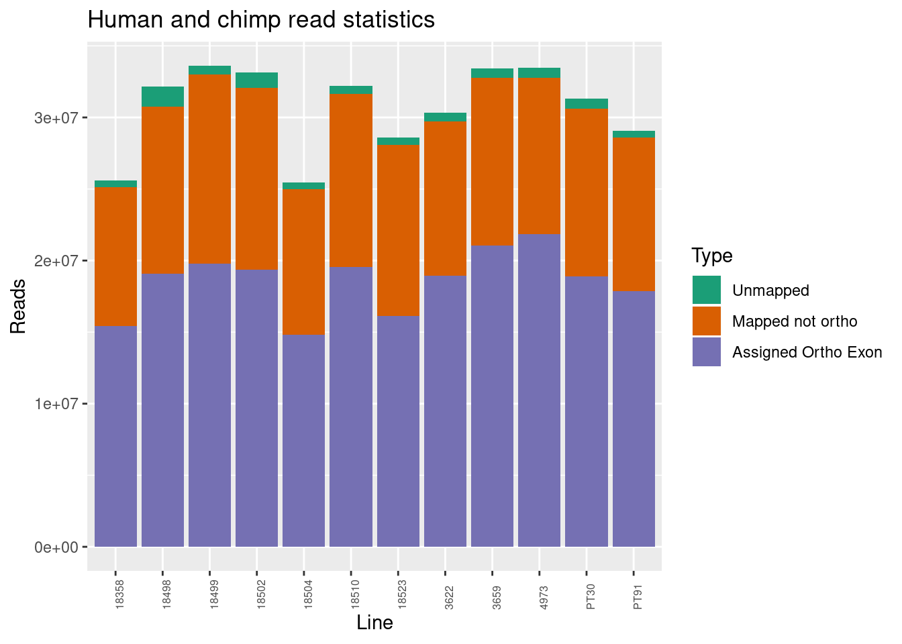
Proportion of reads.
readProp=metaData %>% mutate(Aunmapped=1-percentMapped, MappednotOrtho=percentMapped-percentOrtho) %>% select(Line,Species, percentOrtho, MappednotOrtho, Aunmapped) %>% gather(key="Category", value="Proportion", -Line, -Species)
ggplot(readProp, aes(x=Line,y=Proportion, fill=Category)) + geom_bar(stat="identity") + scale_fill_brewer(palette = "Dark2", name="", labels = c("Unmapped", "Mapped not ortho", "Assigned Ortho Exon"))+theme(axis.text.x = element_text( hjust = 0,vjust = 1, size = 6, angle = 90)) + labs(y="Reads", title="Human and chimp read proportions") 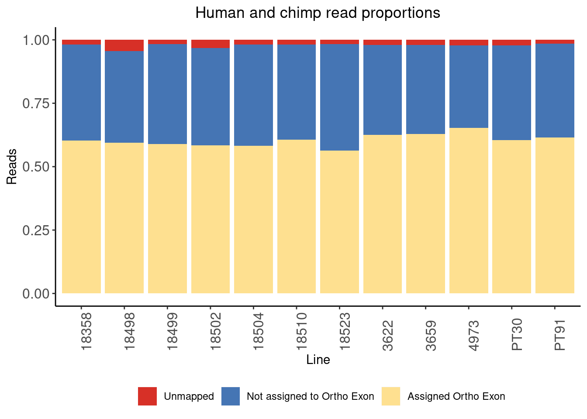
By species:
ggplot(readInfo,aes(x=Category, y=Number, by=Species, fill=Species)) + geom_boxplot() +scale_x_discrete( breaks=c("AAUnMapped","ABNotOrtho","AssignedOrtho"),labels=c("Unmapped", "Not in OrthoExon", "Assigned to OrthoExon")) + scale_fill_brewer(palette = "Dark2") + labs(title="Mapped reads by Species", y="Reads", x="")
| Version | Author | Date |
|---|---|---|
| 2c02d70 | brimittleman | 2019-11-12 |
ggplot(readProp,aes(x=Category, y=Proportion, by=Species, fill=Species)) + geom_boxplot() + scale_fill_brewer(palette = "Dark2") + labs(title="Map Proportion by Species", y="Proportion", x="") + scale_x_discrete( breaks=c("Aunmapped","MappedNotOrtho","percentOrtho"),labels=c("Unmapped", "Not in OrthoExon", "Assigned to OrthoExon"))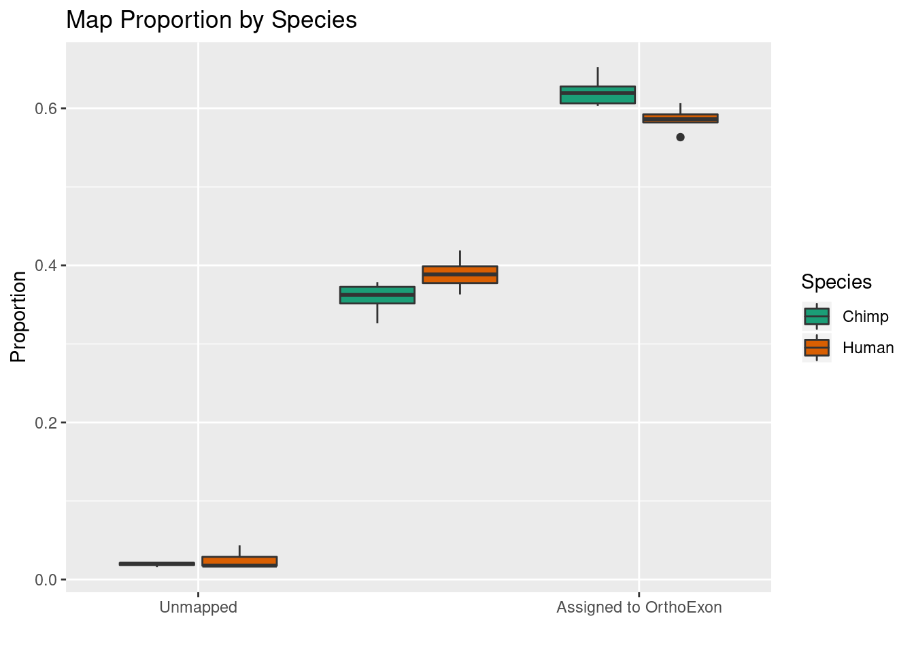
| Version | Author | Date |
|---|---|---|
| 2c02d70 | brimittleman | 2019-11-12 |
Diffferential Expression
Code originally from Lauren Blake (http://lauren-blake.github.io/Reg_Evo_Primates/analysis/Normalization_plots.html)
Raw Counts
Fix header for fc files:
python fixExonFC.py /project2/gilad/briana/Comparative_APA/Human/data/RNAseq/ExonCounts/RNAseqOrthoExon.fc /project2/gilad/briana/Comparative_APA/Human/data/RNAseq/ExonCounts/RNAseqOrthoExon.fixed.fc
python fixExonFC.py /project2/gilad/briana/Comparative_APA/Chimp/data/RNAseq/ExonCounts/RNAseqOrthoExon.fc /project2/gilad/briana/Comparative_APA/Chimp/data/RNAseq/ExonCounts/RNAseqOrthoExon.fixed.fcHumanCounts=read.table("../Human/data/RNAseq/ExonCounts/RNAseqOrthoExon.fixed.fc", header = T, stringsAsFactors = F) %>% select(-Chr,-Start,-End,-Strand, -Length)
ChimpCounts=read.table("../Chimp/data/RNAseq/ExonCounts/RNAseqOrthoExon.fixed.fc", header = T, stringsAsFactors = F) %>% select(-Chr,-Start,-End,-Strand, -Length)
counts_genes=HumanCounts %>% inner_join(ChimpCounts,by="Geneid") %>% column_to_rownames(var="Geneid")
head(counts_genes) NA18504 NA18510 NA18523 NA18498 NA18499 NA18502 NAPT30
ENSG00000188976 24 50 31 69 34 58 2
ENSG00000188157 106 65 106 12 128 39 5
ENSG00000273443 40 43 54 26 48 11 21
ENSG00000217801 60 36 164 62 61 19 34
ENSG00000237330 0 1 0 0 1 1 0
ENSG00000223823 0 0 0 0 0 0 0
NAPT91 NA3622 NA3659 NA4973 NA18358
ENSG00000188976 1 1 1 0 0
ENSG00000188157 7 7 9 34 6
ENSG00000273443 2 3 78 59 18
ENSG00000217801 8 19 139 68 31
ENSG00000237330 0 0 2 1 0
ENSG00000223823 0 0 0 0 0# Load colors
colors <- colorRampPalette(c(brewer.pal(9, "Blues")[1],brewer.pal(9, "Blues")[9]))(100)
pal <- c(brewer.pal(9, "Set1"), brewer.pal(8, "Set2"), brewer.pal(12, "Set3"))
labels <- paste(metaData$Species,metaData$Line, sep=" ")#PCA function (original code from Julien Roux)
#Load in the plot_scores function
plot_scores <- function(pca, scores, n, m, cols, points=F, pchs =20, legend=F){
xmin <- min(scores[,n]) - (max(scores[,n]) - min(scores[,n]))*0.05
if (legend == T){ ## let some room (35%) for a legend
xmax <- max(scores[,n]) + (max(scores[,n]) - min(scores[,n]))*0.50
}
else {
xmax <- max(scores[,n]) + (max(scores[,n]) - min(scores[,n]))*0.05
}
ymin <- min(scores[,m]) - (max(scores[,m]) - min(scores[,m]))*0.05
ymax <- max(scores[,m]) + (max(scores[,m]) - min(scores[,m]))*0.05
plot(scores[,n], scores[,m], xlab=paste("PC", n, ": ", round(summary(pca)$importance[2,n],3)*100, "% variance explained", sep=""), ylab=paste("PC", m, ": ", round(summary(pca)$importance[2,m],3)*100, "% variance explained", sep=""), xlim=c(xmin, xmax), ylim=c(ymin, ymax), type="n")
if (points == F){
text(scores[,n],scores[,m], rownames(scores), col=cols, cex=1)
}
else {
points(scores[,n],scores[,m], col=cols, pch=pchs, cex=1.3)
}
}# Clustering (original code from Julien Roux)
cors <- cor(counts_genes, method="spearman", use="pairwise.complete.obs")
heatmap.2( cors, scale="none", col = colors, margins = c(12, 12), trace='none', denscol="white", labCol=labels, ColSideColors=pal[as.integer(as.factor(metaData$Species))], RowSideColors=pal[as.integer(as.factor(metaData$Collection))+9], cexCol = 0.2 + 1/log10(15), cexRow = 0.2 + 1/log10(15))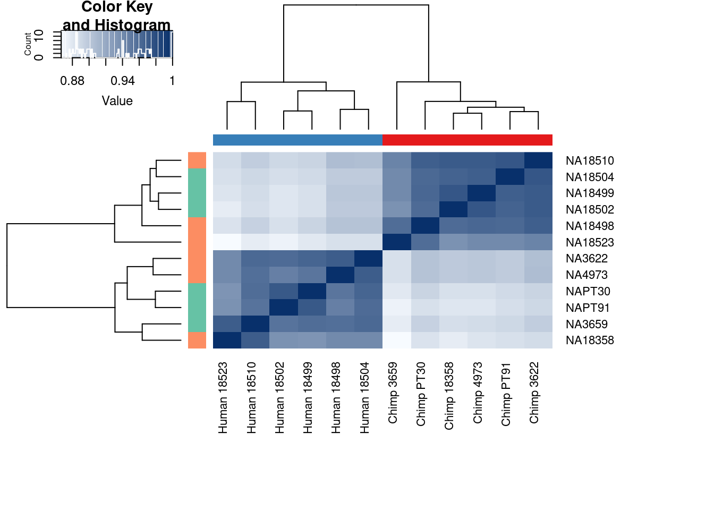
| Version | Author | Date |
|---|---|---|
| 32b435b | brimittleman | 2019-11-12 |
select <- counts_genes
summary(apply(select, 1, var) == 0) Mode FALSE TRUE
logical 32975 11150 # Perform PCA
pca_genes <- prcomp(t(counts_genes), scale = F)
scores <- pca_genes$x
#Make PCA plots with the factors colored by species
### PCs 1 and 2 Raw Data
for (n in 1:1){
col.v <- pal[as.integer(metaData$Species)]
plot_scores(pca_genes, scores, n, n+1, col.v)
}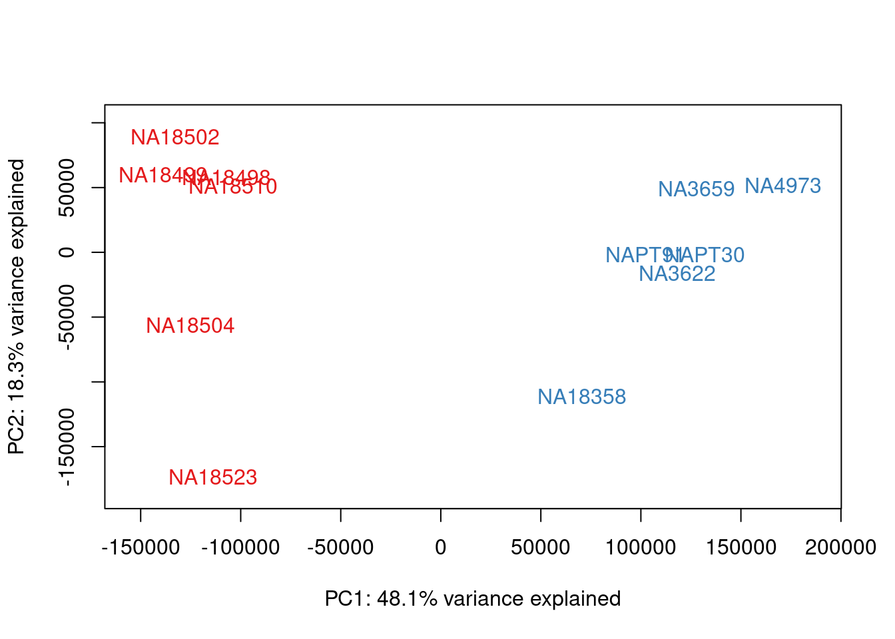
| Version | Author | Date |
|---|---|---|
| 32b435b | brimittleman | 2019-11-12 |
### PCs 3 and 4 Raw Data
for (n in 3:3){
col.v <- pal[as.integer(metaData$Species)]
plot_scores(pca_genes, scores, n, n+1, col.v)
}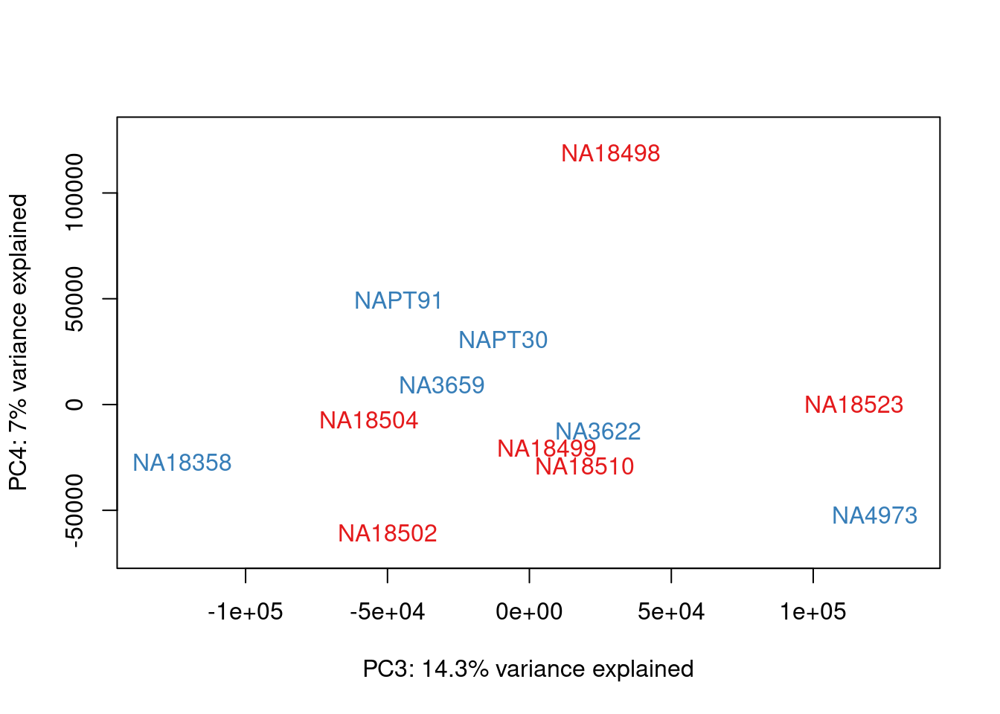
| Version | Author | Date |
|---|---|---|
| 32b435b | brimittleman | 2019-11-12 |
Plot density for raw data:
density_plot_18504 <- ggplot(counts_genes, aes(x = NA18504)) + geom_density() + labs(title = "Density plot of raw gene counts of NA18504") + labs(x = "Raw counts for each gene")
density_plot_18504
| Version | Author | Date |
|---|---|---|
| 32b435b | brimittleman | 2019-11-12 |
Convert to log2
log_counts_genes <- as.data.frame(log2(counts_genes))
head(log_counts_genes) NA18504 NA18510 NA18523 NA18498 NA18499 NA18502
ENSG00000188976 4.584963 5.643856 4.954196 6.108524 5.087463 5.857981
ENSG00000188157 6.727920 6.022368 6.727920 3.584963 7.000000 5.285402
ENSG00000273443 5.321928 5.426265 5.754888 4.700440 5.584963 3.459432
ENSG00000217801 5.906891 5.169925 7.357552 5.954196 5.930737 4.247928
ENSG00000237330 -Inf 0.000000 -Inf -Inf 0.000000 0.000000
ENSG00000223823 -Inf -Inf -Inf -Inf -Inf -Inf
NAPT30 NAPT91 NA3622 NA3659 NA4973 NA18358
ENSG00000188976 1.000000 0.000000 0.000000 0.000000 -Inf -Inf
ENSG00000188157 2.321928 2.807355 2.807355 3.169925 5.087463 2.584963
ENSG00000273443 4.392317 1.000000 1.584963 6.285402 5.882643 4.169925
ENSG00000217801 5.087463 3.000000 4.247928 7.118941 6.087463 4.954196
ENSG00000237330 -Inf -Inf -Inf 1.000000 0.000000 -Inf
ENSG00000223823 -Inf -Inf -Inf -Inf -Inf -Infdensity_plot_18504 <- ggplot(log_counts_genes, aes(x = 18504)) + geom_density()
density_plot_18504 + labs(title = "Density plot of log2 counts of 18504") + labs(x = "Log2 counts for each gene") + geom_vline(xintercept = 1)
| Version | Author | Date |
|---|---|---|
| 32b435b | brimittleman | 2019-11-12 |
plotDensities(log_counts_genes, col=pal[as.numeric(metaData$Species)], legend="topright")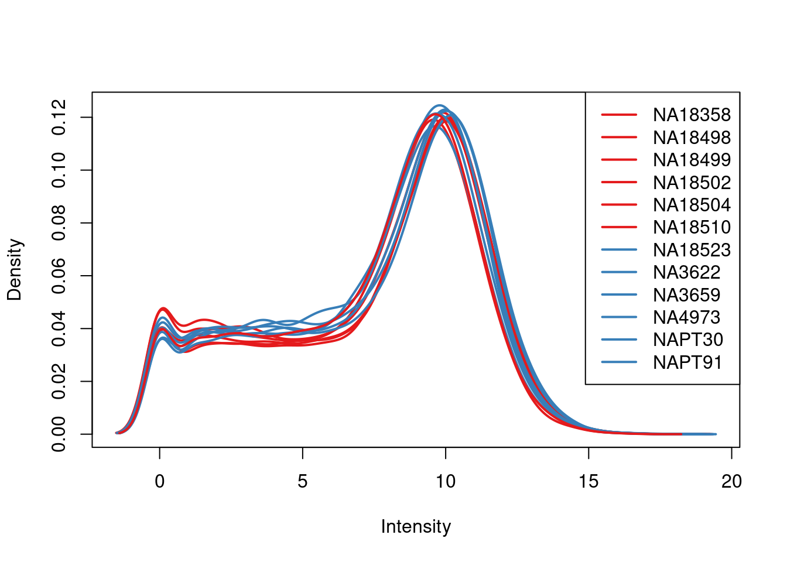
| Version | Author | Date |
|---|---|---|
| 32b435b | brimittleman | 2019-11-12 |
Convert to CPM
cpm <- cpm(counts_genes, log=TRUE)
head(cpm) NA18504 NA18510 NA18523 NA18498 NA18499
ENSG00000188976 0.9947425 1.625971 1.213485 1.9873949 1.075299
ENSG00000188157 3.0661207 1.990970 2.931252 -0.3353280 2.923740
ENSG00000273443 1.6951397 1.417837 1.980752 0.6524534 1.547681
ENSG00000217801 2.2614645 1.174529 3.552519 1.8381797 1.880283
ENSG00000237330 -3.0036033 -2.442815 -3.003603 -3.0036033 -2.450115
ENSG00000223823 -3.0036033 -3.003603 -3.003603 -3.0036033 -3.003603
NA18502 NAPT30 NAPT91 NA3622 NA3659
ENSG00000188976 1.8489000 -2.0183629 -2.3993239 -2.4294571 -2.4761762
ENSG00000188157 1.3004469 -1.2173800 -0.7890014 -0.8590437 -0.6897168
ENSG00000273443 -0.3506575 0.4928914 -1.9747241 -1.7012034 2.1431252
ENSG00000217801 0.3378719 1.1383145 -0.6357420 0.3591647 2.9586805
ENSG00000237330 -2.4371643 -3.0036033 -3.0036033 -3.0036033 -2.0907904
ENSG00000223823 -3.0036033 -3.0036033 -3.0036033 -3.0036033 -3.0036033
NA4973 NA18358
ENSG00000188976 -3.003603 -3.0036033
ENSG00000188157 1.082327 -0.8045812
ENSG00000273443 1.841053 0.5540567
ENSG00000217801 2.039212 1.2860108
ENSG00000237330 -2.447731 -3.0036033
ENSG00000223823 -3.003603 -3.0036033plotDensities(cpm, col=pal[as.numeric(metaData$Species)], legend="topright")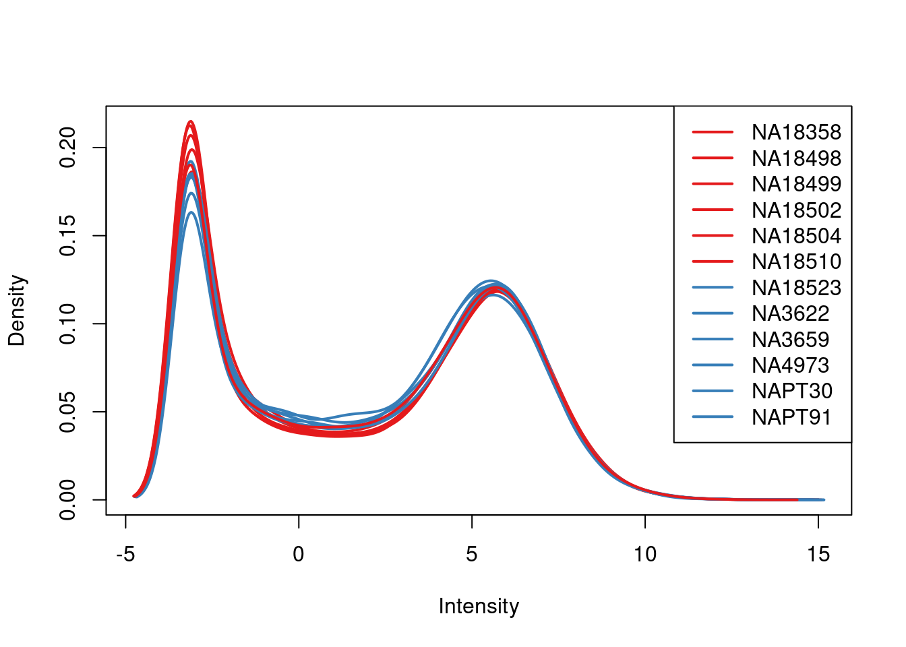
| Version | Author | Date |
|---|---|---|
| 32b435b | brimittleman | 2019-11-12 |
Log2 CPM
TMM/log2(CPM)
## Create edgeR object (dge) to calculate TMM normalization
dge_original <- DGEList(counts=as.matrix(counts_genes), genes=rownames(counts_genes), group = as.character(t(labels)))
dge_original <- calcNormFactors(dge_original)
tmm_cpm <- cpm(dge_original, normalized.lib.sizes=TRUE, log=TRUE, prior.count = 0.25)
head(cpm) NA18504 NA18510 NA18523 NA18498 NA18499
ENSG00000188976 0.9947425 1.625971 1.213485 1.9873949 1.075299
ENSG00000188157 3.0661207 1.990970 2.931252 -0.3353280 2.923740
ENSG00000273443 1.6951397 1.417837 1.980752 0.6524534 1.547681
ENSG00000217801 2.2614645 1.174529 3.552519 1.8381797 1.880283
ENSG00000237330 -3.0036033 -2.442815 -3.003603 -3.0036033 -2.450115
ENSG00000223823 -3.0036033 -3.003603 -3.003603 -3.0036033 -3.003603
NA18502 NAPT30 NAPT91 NA3622 NA3659
ENSG00000188976 1.8489000 -2.0183629 -2.3993239 -2.4294571 -2.4761762
ENSG00000188157 1.3004469 -1.2173800 -0.7890014 -0.8590437 -0.6897168
ENSG00000273443 -0.3506575 0.4928914 -1.9747241 -1.7012034 2.1431252
ENSG00000217801 0.3378719 1.1383145 -0.6357420 0.3591647 2.9586805
ENSG00000237330 -2.4371643 -3.0036033 -3.0036033 -3.0036033 -2.0907904
ENSG00000223823 -3.0036033 -3.0036033 -3.0036033 -3.0036033 -3.0036033
NA4973 NA18358
ENSG00000188976 -3.003603 -3.0036033
ENSG00000188157 1.082327 -0.8045812
ENSG00000273443 1.841053 0.5540567
ENSG00000217801 2.039212 1.2860108
ENSG00000237330 -2.447731 -3.0036033
ENSG00000223823 -3.003603 -3.0036033pca_genes <- prcomp(t(tmm_cpm), scale = F)
scores <- pca_genes$x
for (n in 1:2){
col.v <- pal[as.integer(metaData$Species)]
plot_scores(pca_genes, scores, n, n+1, col.v)
}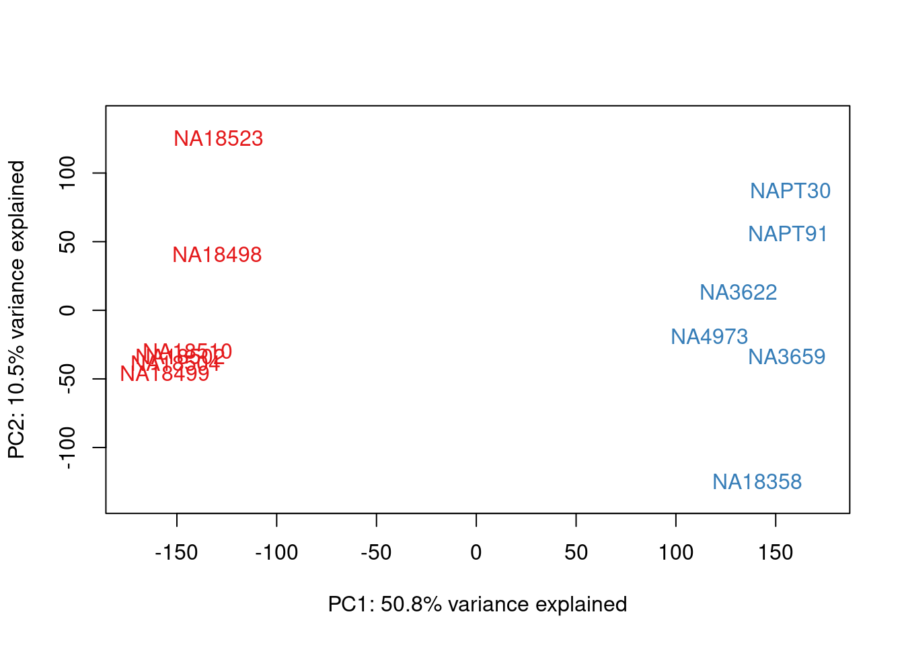
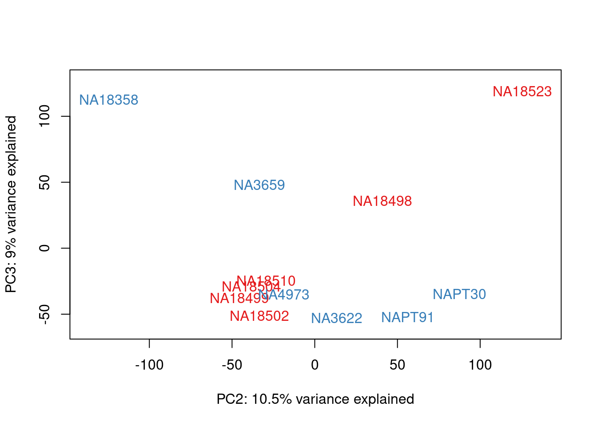
| Version | Author | Date |
|---|---|---|
| da4bab0 | brimittleman | 2019-11-12 |
# Plot library size
boxplot_library_size <- ggplot(dge_original$samples, aes(x=metaData$Species, y = dge_original$samples$lib.size, fill = metaData$Species)) + geom_boxplot()
boxplot_library_size + labs(title = "Library size by Species") + labs(y = "Library size") + labs(x = "Species") + guides(fill=guide_legend(title="Species"))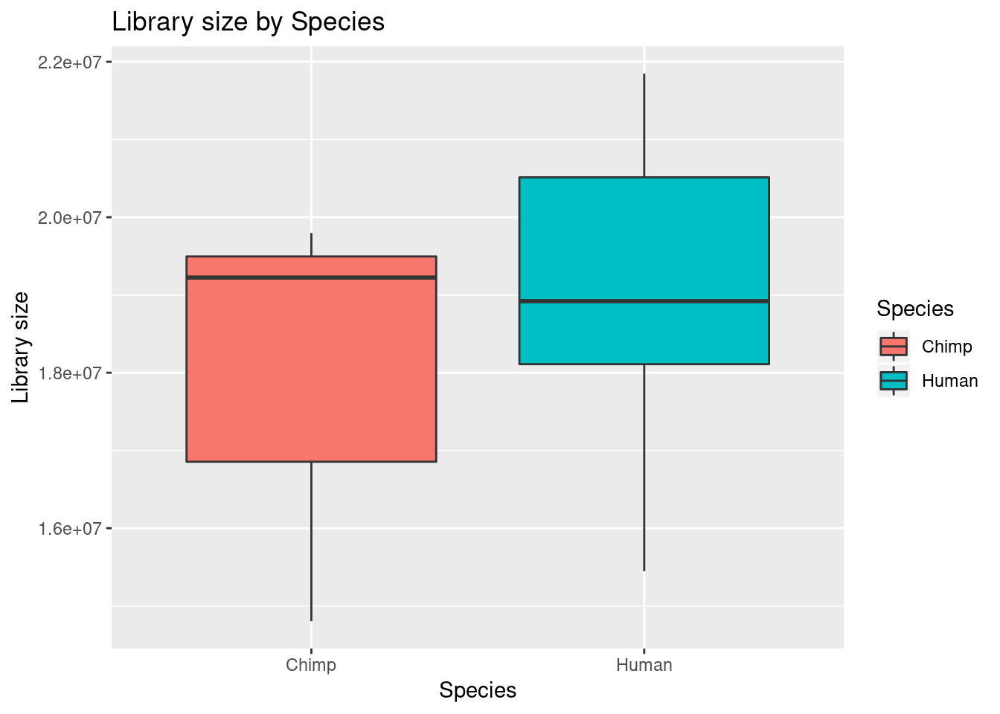
plotDensities(tmm_cpm, col=pal[as.numeric(metaData$Species)], legend="topright")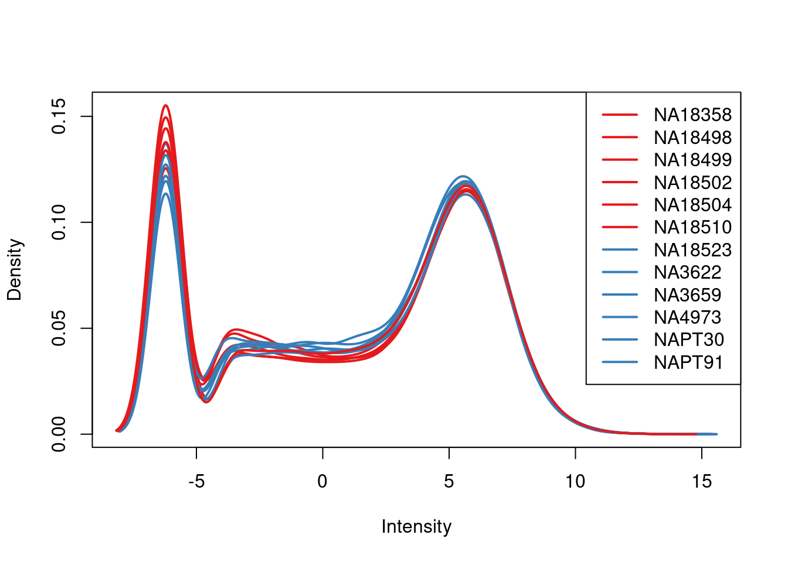
Filter low expressed gene
Filter based on log2 cpm
filter log2(cpm >1) in at least 10 of the samples (2/3)
#filter counts
keep.exprs=rowSums(tmm_cpm>1) >8
counts_filtered= counts_genes[keep.exprs,]
plotDensities(counts_filtered, col=pal[as.numeric(metaData$Species)], legend="topright")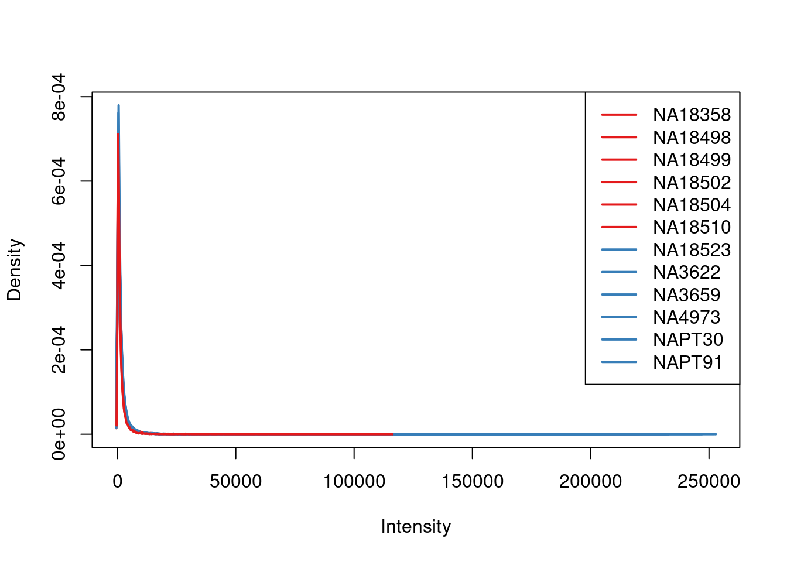
| Version | Author | Date |
|---|---|---|
| da4bab0 | brimittleman | 2019-11-12 |
labels <- paste(metaData$Species, metaData$Line, sep=" ")
dge_in_cutoff <- DGEList(counts=as.matrix(counts_filtered), genes=rownames(counts_filtered), group = as.character(t(labels)))
dge_in_cutoff <- calcNormFactors(dge_in_cutoff)
cpm_in_cutoff <- cpm(dge_in_cutoff, normalized.lib.sizes=TRUE, log=TRUE, prior.count = 0.25)
head(cpm_in_cutoff) NA18504 NA18510 NA18523 NA18498 NA18499 NA18502
ENSG00000217801 2.243163 1.0859263 3.672233 1.802011 1.859359 0.2120175
ENSG00000186891 5.022046 5.0400892 4.902343 6.682104 5.710517 3.3639006
ENSG00000186827 3.102236 4.6574228 1.712312 1.802011 3.968056 1.9042287
ENSG00000078808 6.868747 7.0337697 7.475369 7.036034 6.625443 6.7359729
ENSG00000176022 4.762642 4.6839390 4.801525 5.267970 4.613121 4.7028975
ENSG00000184163 1.427504 -0.1617807 1.712312 1.404540 1.062680 0.3544851
NAPT30 NAPT91 NA3622 NA3659 NA4973 NA18358
ENSG00000217801 1.1675009 -0.7849597 0.2795297 3.003758 2.101032 1.307542
ENSG00000186891 4.6403916 3.1655019 4.7307807 6.452972 6.478017 6.488794
ENSG00000186827 0.2591792 2.0129015 3.1544019 0.651737 5.254278 2.181924
ENSG00000078808 6.6946199 6.7706146 6.7797936 6.789003 7.211007 7.067711
ENSG00000176022 4.8386000 5.5562504 4.8490853 5.281245 4.790317 5.568370
ENSG00000184163 2.8929268 2.2016666 1.4133401 1.771404 1.743030 3.229013hist(cpm_in_cutoff, xlab = "Log2(CPM)", main = "Log2(CPM) values for genes meeting the filtering criteria", breaks = 100 )
| Version | Author | Date |
|---|---|---|
| da4bab0 | brimittleman | 2019-11-12 |
Voom transformation:
Species <- factor(metaData$Species)
design <- model.matrix(~ 0 + Species)
colnames(design) <- gsub("Species", "", dput(colnames(design)))c("SpeciesChimp", "SpeciesHuman")# Voom with individual as a random variable
cpm.voom<- voom(counts_filtered, design, normalize.method="quantile", plot=T)
boxplot(cpm.voom$E, col = pal[as.numeric(metaData$Species)],las=2)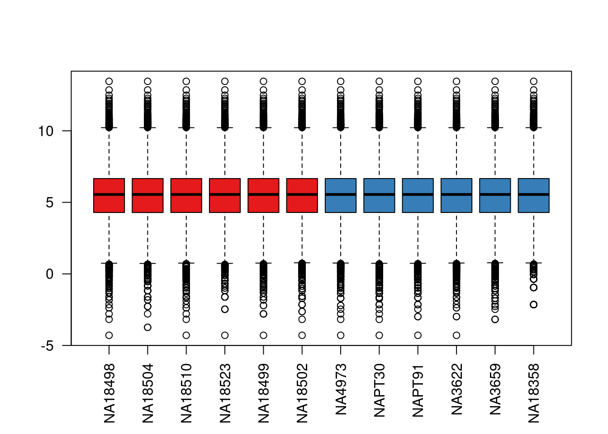
plotDensities(cpm.voom, col = pal[as.numeric(metaData$Species)], legend = "topleft") 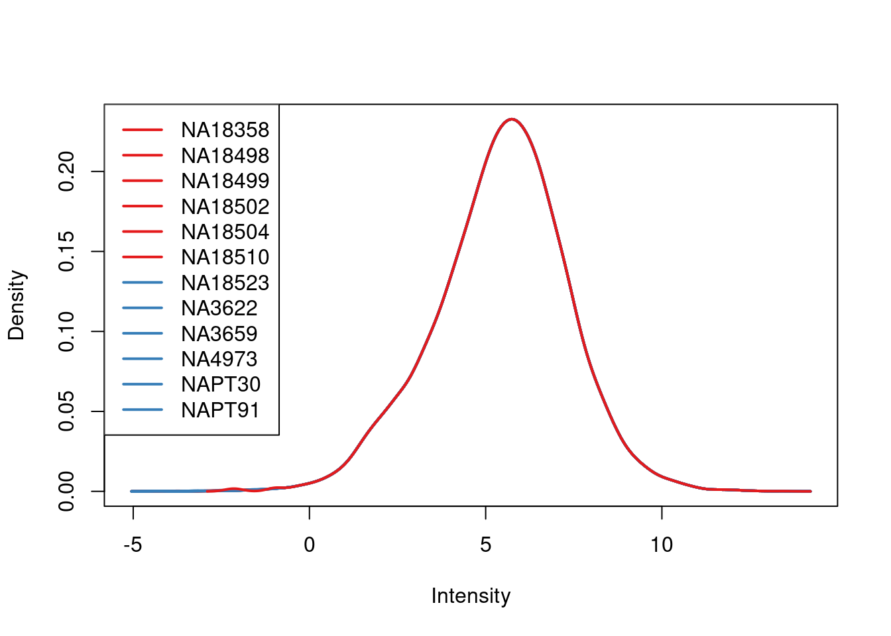
Looks like i still have a skew on the lower side of the distribution.
# PCA
pca_genes <- prcomp(t(cpm.voom$E), scale = F)
scores <- pca_genes$x
eigsGene <- pca_genes$sdev^2
proportionG = eigsGene/sum(eigsGene)
plot(proportionG)
for (n in 1:2){
col.v <- pal[as.integer(metaData$Species)]
plot_scores(pca_genes, scores, n, n+1, col.v)
}
| Version | Author | Date |
|---|---|---|
| a22bae9 | brimittleman | 2019-11-13 |
#Clustering (original code from Julien Roux)
cors <- cor(cpm.voom$E, method="spearman", use="pairwise.complete.obs")
heatmap.2( cors, scale="none", col = colors, margins = c(12, 12), trace='none', denscol="white", labCol=labels, ColSideColors=pal[as.integer(as.factor(metaData$Species))], RowSideColors=pal[as.integer(as.factor(metaData$Species))+9], cexCol = 0.2 + 1/log10(15), cexRow = 0.2 + 1/log10(15))
| Version | Author | Date |
|---|---|---|
| da4bab0 | brimittleman | 2019-11-12 |
This is wierd. Normalization moves 2 samples to opposite species clusters but the samples that separate in the correlation are not those samples. 4973 and 18498 are the samples that looked funny on the original 3’ data. This may be a sample swap at the RNA stage. These samples were in the same extraction batch. It could have happened then. I will look into this more.
One thing I can do is look at the correlation between the PCs and other factors in the data.
# PCA
pca_genes <- prcomp(t(cpm.voom$E), scale = F)
scores <- pca_genes$x
for (n in 1:2){
col.v <- pal[as.integer(metaData$Collection)]
plot_scores(pca_genes, scores, n, n+1, col.v)
}
| Version | Author | Date |
|---|---|---|
| a22bae9 | brimittleman | 2019-11-13 |

| Version | Author | Date |
|---|---|---|
| a22bae9 | brimittleman | 2019-11-13 |
metaData$Extraction=as.factor(metaData$Extraction)
for (n in 1:2){
col.v <- pal[as.integer(metaData$Extraction)]
plot_scores(pca_genes, scores, n, n+1, col.v)
}
| Version | Author | Date |
|---|---|---|
| a22bae9 | brimittleman | 2019-11-13 |
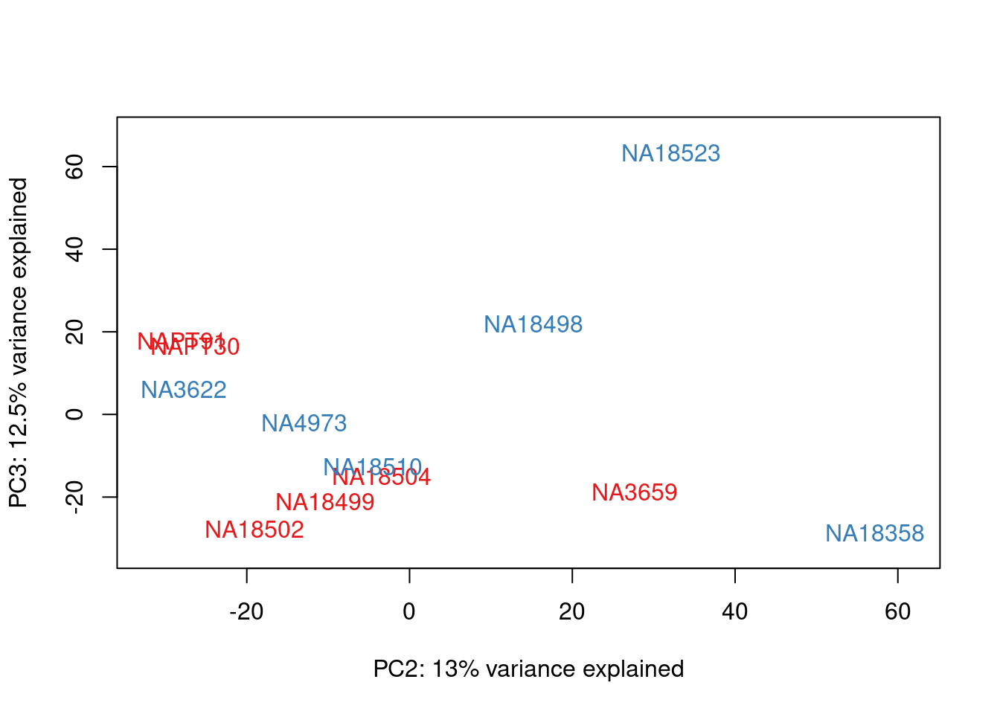
| Version | Author | Date |
|---|---|---|
| a22bae9 | brimittleman | 2019-11-13 |
It does not look like batch (who collected or extraction date batch)
cols = brewer.pal(9, "Blues")
palC = colorRampPalette(cols)
metaData$UndilutedAverageorder = findInterval(metaData$UndilutedAverage, sort(metaData$UndilutedAverage))
for (n in 1:2){
col.v <- palC(nrow(metaData))[metaData$UndilutedAverageorder]
plot_scores(pca_genes, scores, n, n+1, col.v)
}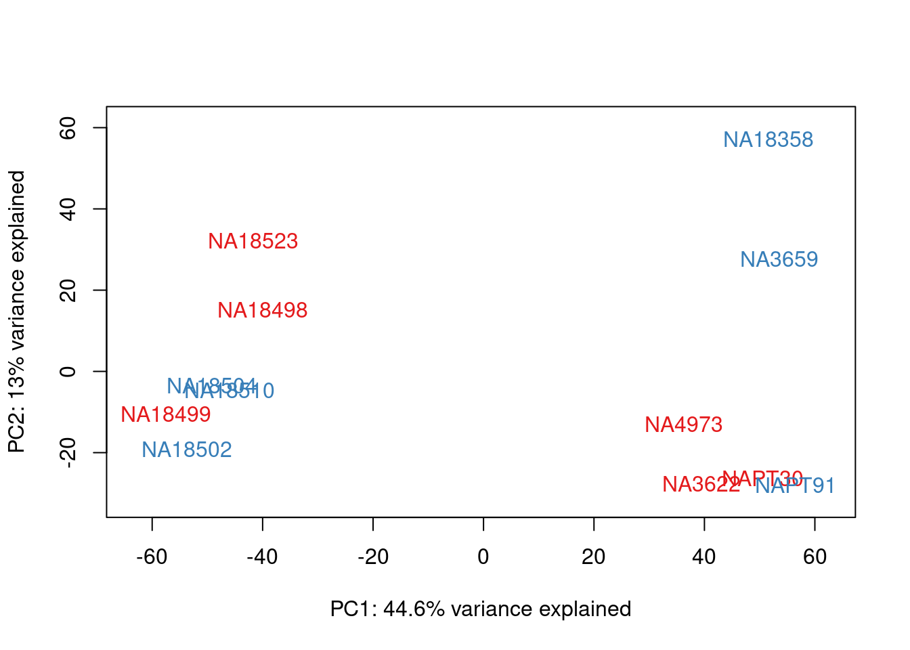
| Version | Author | Date |
|---|---|---|
| a22bae9 | brimittleman | 2019-11-13 |
| Version | Author | Date |
|---|---|---|
| a22bae9 | brimittleman | 2019-11-13 |
metaData$BioAConcorder = findInterval(metaData$BioAConc, sort(metaData$BioAConc))
for (n in 1:2){
col.v <- palC(nrow(metaData))[metaData$BioAConcorder]
plot_scores(pca_genes, scores, n, n+1, col.v)
}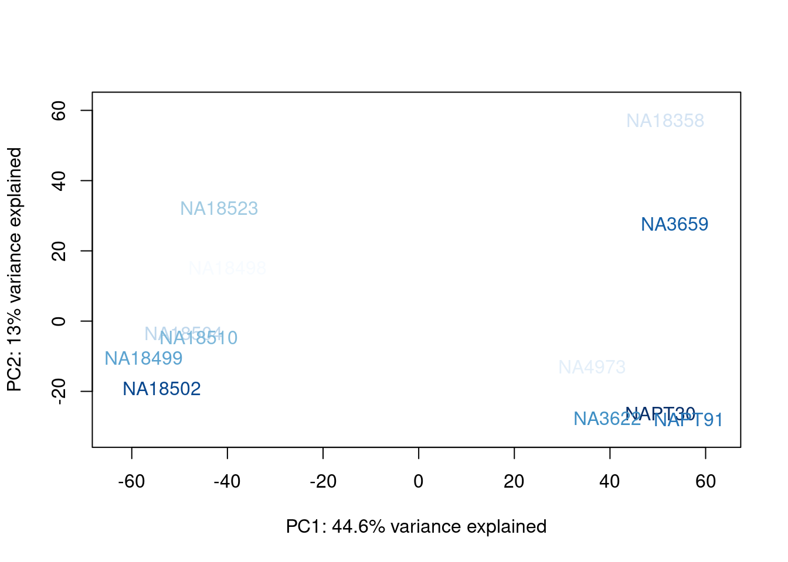
| Version | Author | Date |
|---|---|---|
| a22bae9 | brimittleman | 2019-11-13 |
| Version | Author | Date |
|---|---|---|
| a22bae9 | brimittleman | 2019-11-13 |
metaData$RinConcorder = findInterval(metaData$Rin, sort(metaData$Rin))
for (n in 1:2){
col.v <- palC(nrow(metaData))[metaData$RinConcorder]
plot_scores(pca_genes, scores, n, n+1, col.v)
}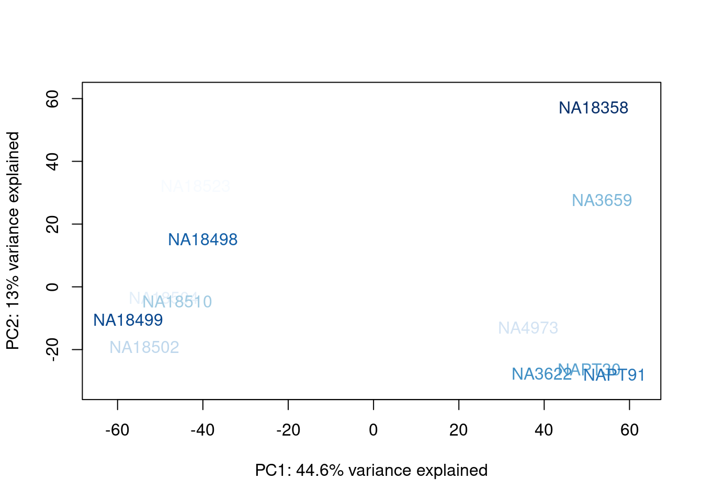
| Version | Author | Date |
|---|---|---|
| a22bae9 | brimittleman | 2019-11-13 |
| Version | Author | Date |
|---|---|---|
| a22bae9 | brimittleman | 2019-11-13 |
The samples do not cluster by collection concentration, RNA rin score or RNA concentration.
metaData$AssignedOrthoorder = findInterval(metaData$AssignedOrtho, sort(metaData$AssignedOrtho))
for (n in 1:2){
col.v <- palC(nrow(metaData))[metaData$AssignedOrthoorder]
plot_scores(pca_genes, scores, n, n+1, col.v)
}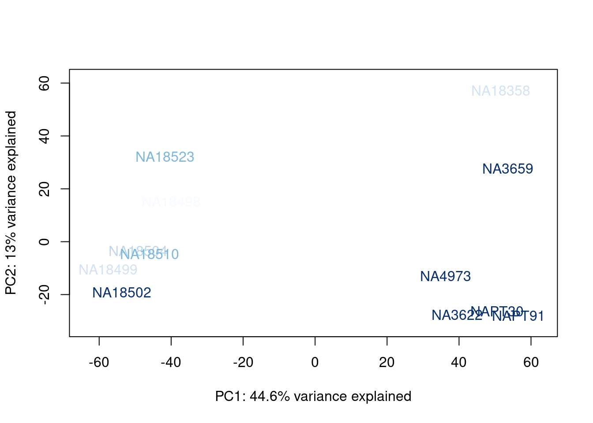
| Version | Author | Date |
|---|---|---|
| a22bae9 | brimittleman | 2019-11-13 |
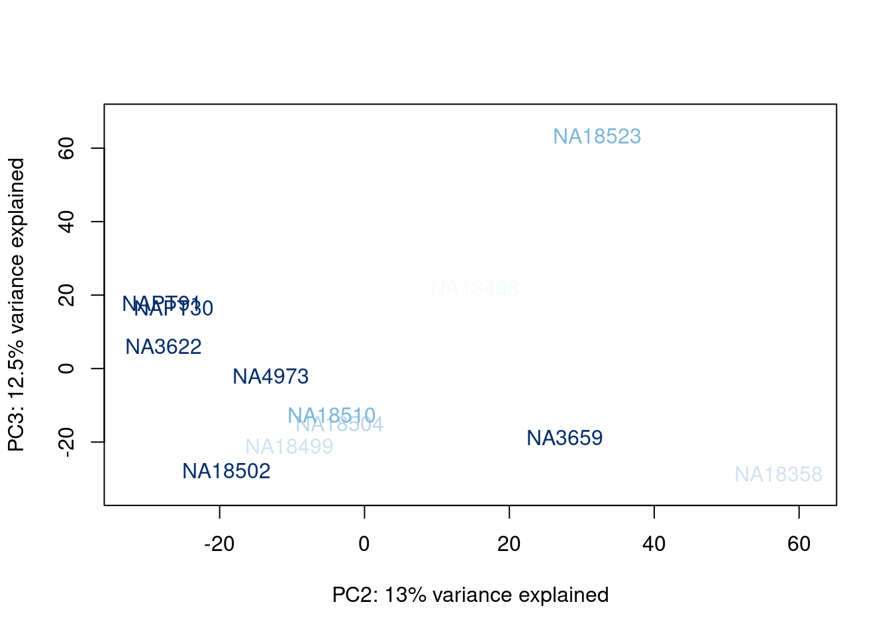
| Version | Author | Date |
|---|---|---|
| a22bae9 | brimittleman | 2019-11-13 |
They also do not cluster by number of reads mapping to ortho exons.
I should look at the correlation between PCs and these factors.
Try to run the pca the opposite way:
pca_line=prcomp(cpm.voom$E, center=T,scale=T)
pca_line_df=as.data.frame(pca_line$rotation) %>% rownames_to_column(var="Line") %>% select(1:11)
eigs <- pca_line$sdev^2
proportion = eigs/sum(eigs)
plot(proportion)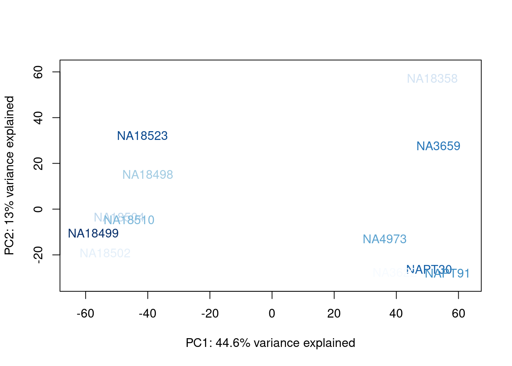
| Version | Author | Date |
|---|---|---|
| a22bae9 | brimittleman | 2019-11-13 |
metaData_order=metaData %>% arrange(Line)
PCA_order=pca_line_df %>% arrange(Line)
Pc1Spec <- summary(lm(PCA_order$PC1 ~ metaData_order$Species))$adj.r.squared
Pc2Spec <- summary(lm(PCA_order$PC2 ~ metaData_order$Species))$adj.r.squared
Pc3Spec <- summary(lm(PCA_order$PC3 ~ metaData_order$Species))$adj.r.squared
Pc1Spec[1] -0.09882106Pc2Spec[1] 0.6285914Pc3Spec[1] -0.0714836Expand this to full heatmap.
plotpca
col.v <- pal[as.integer(metaData$Species)]
plot_scores(pca_line, scores, n, n+1,cols = col.v )
| Version | Author | Date |
|---|---|---|
| 586c9ec | brimittleman | 2019-11-13 |
Question: what is the difference between these PCAs???
Test for DE
fit.cpm.voom = lmFit(cpm.voom, design, plot=T)
head(coef(fit.cpm.voom)) Chimp Human
ENSG00000217801 1.8279432 1.036511
ENSG00000186891 5.1376261 5.323165
ENSG00000186827 2.9202688 2.087920
ENSG00000078808 6.9537242 6.888134
ENSG00000176022 4.8037366 5.135675
ENSG00000184163 0.8890838 2.137235contr <- makeContrasts(Chimp - Human, levels = colnames(coef(fit.cpm.voom)))
contr Contrasts
Levels Chimp - Human
Chimp 1
Human -1tmp <- contrasts.fit(fit.cpm.voom, contr)
tmp <- eBayes(tmp)
top.table <- topTable(tmp, sort.by = "P", n = Inf)
head(top.table, 20) logFC AveExpr t P.Value adj.P.Val
ENSG00000205531 -5.819357 5.139544 -44.25425 6.089973e-15 6.346969e-11
ENSG00000133112 6.018504 8.506818 35.64582 8.557712e-14 4.459423e-10
ENSG00000186298 3.191561 6.859973 33.90987 1.572843e-13 5.464058e-10
ENSG00000105372 4.883933 7.896658 31.39032 4.026508e-13 1.049107e-09
ENSG00000142937 5.614701 8.118075 28.45776 1.325801e-12 2.512813e-09
ENSG00000145741 6.027666 5.473322 28.25392 1.446640e-12 2.512813e-09
ENSG00000071082 5.675970 6.562725 26.36491 3.346564e-12 4.592447e-09
ENSG00000147604 -5.542900 5.366460 -26.25190 3.525194e-12 4.592447e-09
ENSG00000100316 5.828531 8.135325 24.86943 6.781717e-12 7.853228e-09
ENSG00000105640 -3.044768 7.979343 -24.60233 7.726670e-12 8.052735e-09
ENSG00000241923 -4.510084 4.471011 -23.63435 1.254257e-11 1.188351e-08
ENSG00000116478 3.311599 5.893512 23.45951 1.371727e-11 1.191345e-08
ENSG00000154978 -3.442110 4.679744 -21.82502 3.271982e-11 2.623123e-08
ENSG00000131475 3.190471 3.629705 20.73502 6.051777e-11 4.505115e-08
ENSG00000136021 3.603012 4.547463 19.95803 9.561314e-11 6.354146e-08
ENSG00000110619 -5.057447 5.041488 -19.92461 9.754974e-11 6.354146e-08
ENSG00000169926 -5.924003 5.807146 -19.55633 1.219259e-10 7.474777e-08
ENSG00000167716 -4.593573 3.460662 -18.86442 1.874262e-10 1.085198e-07
ENSG00000142541 5.961327 6.514903 18.60668 2.208198e-10 1.211255e-07
ENSG00000198034 6.509858 6.822576 18.34063 2.621306e-10 1.318193e-07
B
ENSG00000205531 21.90975
ENSG00000133112 21.64946
ENSG00000186298 21.15993
ENSG00000105372 20.34409
ENSG00000142937 19.26260
ENSG00000145741 18.45658
ENSG00000071082 18.14390
ENSG00000147604 17.81716
ENSG00000100316 17.75523
ENSG00000105640 17.68417
ENSG00000241923 16.68684
ENSG00000116478 17.01625
ENSG00000154978 16.01425
ENSG00000131475 15.26285
ENSG00000136021 15.01712
ENSG00000110619 14.97583
ENSG00000169926 14.81376
ENSG00000167716 14.17244
ENSG00000142541 14.32459
ENSG00000198034 14.16312length(which(top.table$adj.P.Val < 0.05))[1] 499Make a table to plot:
-log10(bh adjusted pval) vs logFC (log3 fold change)
top.table=top.table %>% mutate(Species=ifelse(logFC > 1 & adj.P.Val<.05, "Chimp", ifelse(logFC < -1 & adj.P.Val< .05, "Human", "Neither")))
ggplot(top.table, aes(x=logFC, y= -log10(adj.P.Val))) + geom_point(aes(col=Species), alpha=.3)
questions: * Correlation in fit to use design rather than contrast matrix. * direction of effect size * what is eBayes step?
sessionInfo()R version 3.5.1 (2018-07-02)
Platform: x86_64-pc-linux-gnu (64-bit)
Running under: Scientific Linux 7.4 (Nitrogen)
Matrix products: default
BLAS/LAPACK: /software/openblas-0.2.19-el7-x86_64/lib/libopenblas_haswellp-r0.2.19.so
locale:
[1] LC_CTYPE=en_US.UTF-8 LC_NUMERIC=C
[3] LC_TIME=en_US.UTF-8 LC_COLLATE=en_US.UTF-8
[5] LC_MONETARY=en_US.UTF-8 LC_MESSAGES=en_US.UTF-8
[7] LC_PAPER=en_US.UTF-8 LC_NAME=C
[9] LC_ADDRESS=C LC_TELEPHONE=C
[11] LC_MEASUREMENT=en_US.UTF-8 LC_IDENTIFICATION=C
attached base packages:
[1] grid stats graphics grDevices utils datasets methods
[8] base
other attached packages:
[1] reshape2_1.4.3 RColorBrewer_1.1-2 VennDiagram_1.6.20
[4] futile.logger_1.4.3 R.utils_2.7.0 R.oo_1.22.0
[7] R.methodsS3_1.7.1 edgeR_3.24.0 limma_3.38.2
[10] gplots_3.0.1 scales_1.0.0 forcats_0.3.0
[13] stringr_1.3.1 dplyr_0.8.0.1 purrr_0.3.2
[16] readr_1.3.1 tidyr_0.8.3 tibble_2.1.1
[19] ggplot2_3.1.1 tidyverse_1.2.1 workflowr_1.5.0
loaded via a namespace (and not attached):
[1] Rcpp_1.0.2 locfit_1.5-9.1 lubridate_1.7.4
[4] lattice_0.20-38 gtools_3.8.1 assertthat_0.2.0
[7] rprojroot_1.3-2 digest_0.6.18 R6_2.3.0
[10] cellranger_1.1.0 plyr_1.8.4 futile.options_1.0.1
[13] backports_1.1.2 evaluate_0.12 httr_1.3.1
[16] pillar_1.3.1 rlang_0.4.0 lazyeval_0.2.1
[19] readxl_1.1.0 rstudioapi_0.10 gdata_2.18.0
[22] whisker_0.3-2 rmarkdown_1.10 labeling_0.3
[25] munsell_0.5.0 broom_0.5.1 compiler_3.5.1
[28] httpuv_1.4.5 modelr_0.1.2 pkgconfig_2.0.2
[31] htmltools_0.3.6 tidyselect_0.2.5 crayon_1.3.4
[34] withr_2.1.2 later_0.7.5 bitops_1.0-6
[37] nlme_3.1-137 jsonlite_1.6 gtable_0.2.0
[40] formatR_1.5 git2r_0.26.1 magrittr_1.5
[43] KernSmooth_2.23-15 cli_1.1.0 stringi_1.2.4
[46] fs_1.3.1 promises_1.0.1 xml2_1.2.0
[49] generics_0.0.2 lambda.r_1.2.3 tools_3.5.1
[52] glue_1.3.0 hms_0.4.2 yaml_2.2.0
[55] colorspace_1.3-2 caTools_1.17.1.1 rvest_0.3.2
[58] knitr_1.20 haven_1.1.2